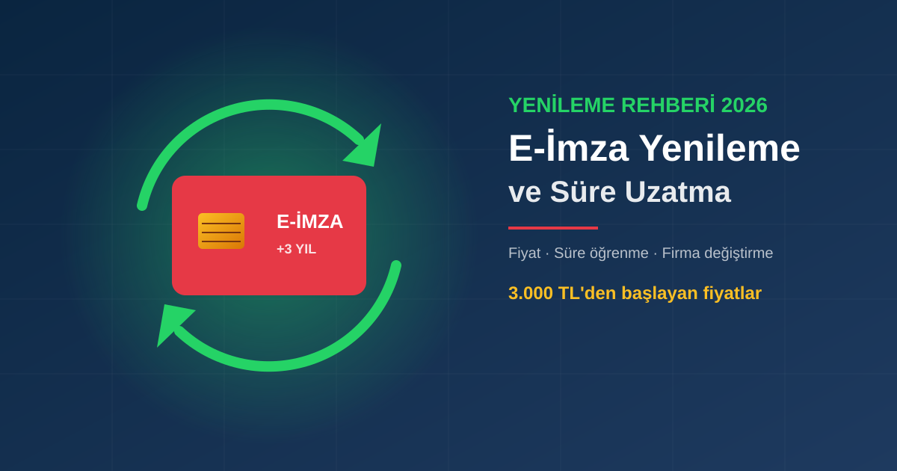

E-İmza Yenileme ve Süre Uzatma Aynı Şey mi?
Günlük dilde "e-imza yenileme", "süre uzatma" ve "sertifika yenileme" aynı işlem için kullanılır. Teknik olarak e-imzanın süresi uzatılmaz; elektronik sertifika hizmet sağlayıcısı (ESHS) size yeni bir nitelikli elektronik sertifika üretir. Süre dolmadan başvurduğunuzda bu yeni sertifika mevcut kartınıza yüklenir; kullanıcı açısından sonuç, "sürenin uzaması" gibi görünür.
Süresi dolduktan sonra ne yapmanız gerektiğini merak ediyorsanız E-İmza Süresi Doldu — Ne Yapılmalı? yazımıza bakın. Bu rehber ise süre dolmadan planlı yenileme, fiyatlar ve sağlayıcı değiştirme üzerine.
E-İmza Süresi Nasıl Öğrenilir?
E-imzanızın bitiş tarihini öğrenmenin üç pratik yolu var:
E-imza yazılımından
Kartınız takılıyken e-imza yazılımında (Ayyıldız kullanıcıları için kart yönetim uygulaması) sertifika bilgilerini açın. "Geçerlilik bitiş" ya da "Son kullanma" satırı bitiş tarihidir.
Tarayıcıdan
Chrome veya Edge'de Ayarlar → Gizlilik ve güvenlik → Güvenlik → Sertifikaları yönet yolunu izleyin. Kart takılıyken adınıza düzenlenmiş sertifikanın geçerlilik tarihleri listelenir.
Bize sorun
Kartınız yanınızda değilse TC kimlik numaranızla WhatsApp'tan yazın; Ayyıldız sertifikanızın bitiş tarihini kontrol edip size iletelim.
2026 E-İmza Yenileme Fiyatları
Ayyıldız e-imza yenileme fiyatları yeni başvuruyla aynıdır. Uzun süreli paket, yıllık maliyeti belirgin şekilde düşürür:
| Paket | Fiyat (KDV dahil) | Yıllık maliyet |
|---|---|---|
| 1 yıllık | 3.000 TL | 3.000 TL |
| 2 yıllık | 3.500 TL | 1.750 TL |
| 3 yıllık | 4.000 TL | ~1.333 TL |
Her yıl yenilemek yerine 3 yıllık paket seçen bir kullanıcı, üç yılda 5.000 TL tasarruf eder (3 × 3.000 TL yerine 4.000 TL). Ayrıca üç yıl boyunca yenileme takibiyle uğraşmaz.
Adım Adım E-İmza Yenileme
1. Talebinizi iletin
WhatsApp'tan yenileme istediğinizi ve paket süresini (1, 2 veya 3 yıl) yazın.
2. Kimlik fotoğrafı
Bireysel yenilemede genellikle kimlik kartınızın fotoğrafı yeterlidir. Firma adına kullanımda güncel belgeler istenebilir.
3. Ödeme
Online tahsilat (kredi kartı) veya havale/EFT ile ödemenizi yapın.
4. Kimlik doğrulama ve yükleme
ESHS'nin kimlik doğrulama adımı tamamlanınca yeni sertifika kartınıza yüklenir. Süre dolmadan yapılan yenilemelerde işlem çoğunlukla aynı gün biter.
Başka Firmadan Aldığım E-İmzayı Ayyıldız ile Yenileyebilir miyim?
Evet. Türkiye'de BTK yetkisiyle nitelikli elektronik sertifika veren birden fazla sağlayıcı vardır (AYYILDIZ İMZA, E-Güven, E-Tuğra, kamu personeli için Kamu SM gibi; güncel liste: BTK ESHS listesi). Hangisinden aldığınız fark etmeksizin, süre uzatma zamanı geldiğinde sağlayıcı değiştirebilirsiniz.
- Yeni başvuru sayılır: Farklı sağlayıcının sertifikası eski kartınıza yüklenmez; size yeni Ayyıldız kartı gönderilir (1-3 iş günü).
- Kullanım alanı değişmez: e-Devlet, UYAP, EKAP, GİB, MERSİS, e-Reçete gibi sistemler BTK yetkili tüm sağlayıcıların sertifikalarını kabul eder.
- Kurulum: Yeni kartın sürücüsü farklı olabilir; uzaktan bağlantıyla birlikte kuruyoruz.
- Eski kart: Süresi dolan eski kartınızı ayrıca iptal ettirmeniz gerekmez; süresi dolunca kendiliğinden geçersiz olur.
Ne Zaman Yenilemeliyim?
Bitiş tarihinden en az 30 gün önce başvurmak en güvenli yoldur. Beyanname, ihale veya dava süresinin son gününde e-imzanın dolması, en sık karşılaştığımız ve en pahalıya patlayan durumdur. Takvim uygulamanıza bitişten 30 gün önce hatırlatıcı kurmanızı öneririz.
Kurumlar İçin Toplu Yenileme
Muhasebe büroları, hastaneler ve şirketler gibi çok sayıda e-imza kullanan kurumlarda bitiş tarihleri farklı olur. Tüm çalışanların sertifikalarını listeleyip yenilemeleri tek tarihte toplamak hem takibi kolaylaştırır hem de kurulum işini tek seferde bitirir. Toplu yenileme için kişi listesiyle bize yazabilirsiniz.